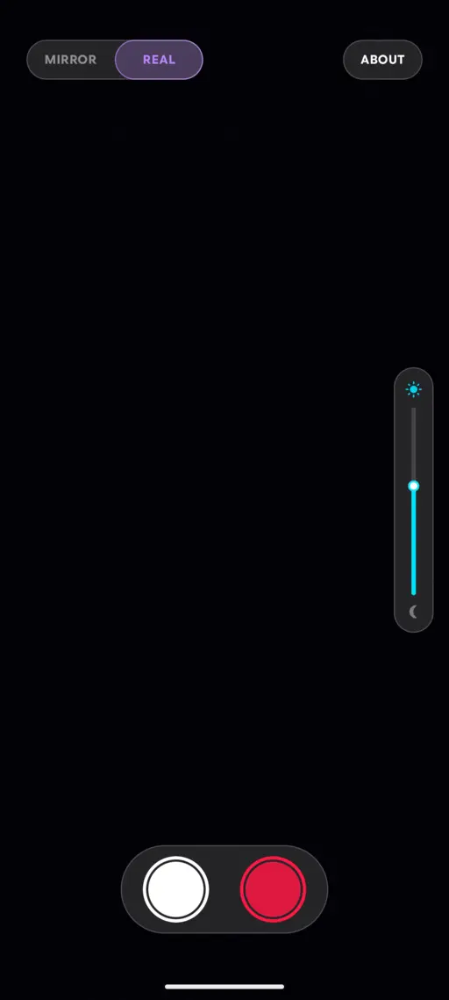
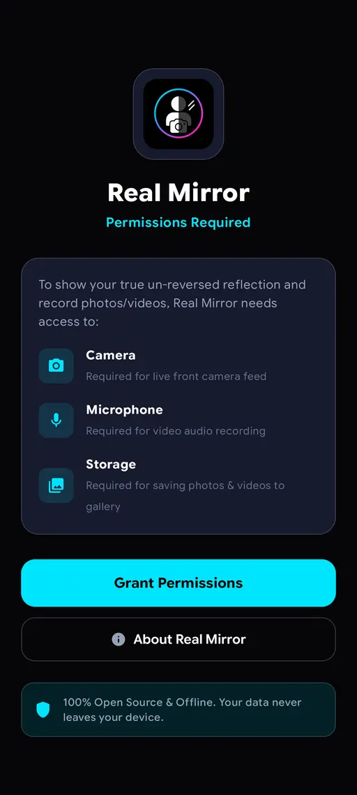
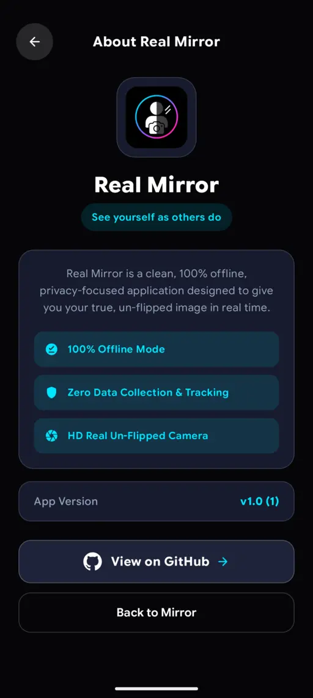

See yourself as others do with Real Mirror
A privacy-first camera app that shows your true, un-reversed reflection in real time. Switch between Mirror and Real views, capture photos or videos, and keep your camera feed on your device.
A more natural way to see your reflection.
Everything you need for a clear, real-time view—with a focus on straightforward controls and privacy.
Mirror / Real toggle
Switch between a familiar mirrored view and the un-reversed view other people see.
Photo and video capture
Capture photos or record videos with audio, with saved media going to your gallery.
On-the-go brightness
Adjust screen brightness right from the viewfinder with a simple vertical slider.
Private and offline
No analytics or tracking. Your camera feed stays on your device, and core features work offline.
A look inside Real Mirror.
Explore the live viewfinder, permission setup, and app details.



Built in the open. Private by design.
Explore the source code, read setup instructions, or follow development on GitHub.